Repair Procedures
Removal
Engine removal is not required for this procedure.
CAUTION:
- Use fender covers to avoid damaging painted surfaces.
- To avoid damage, unplug the wiring connectors carefully while holding the connector portion.
NOTE:
Mark all wiring and hoses to avoid misconnection.
1. Disconnect the battery negative terminal.
2. Remove the RH front wheel.
3. Remove the RH under cover.
4. Remove the engine cover.
5. Disconnect the wiring connectors and harness clamps, and then remove the wiring and protectors from the cylinder head cover.
(1) The intake OCV (Oil control valve) connector (A)

(2) The exhaust OCV (Oil control valve) connector (A)

(3) The alternator connector (A)

(4) The ignition coil connectors (A)

(5) The intake CMPS (Camshaft position sensor) connector (A)
(6) The exhaust CMPS (Camshaft position sensor) connector (B)

6. Disconnect the breather hose (A).
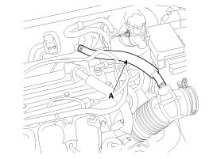
7. Disconnect the PCV (Positive crankcase ventilation) hose (A).

8. Remove the ignition coils (A).

9. Remove the engine oil level gauge (A).
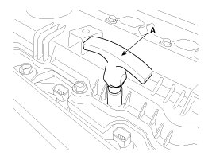
10. Remove the cylinder head cover (A).
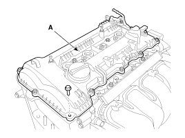
NOTE:
Unfasten the bolts in the sequence as shown.
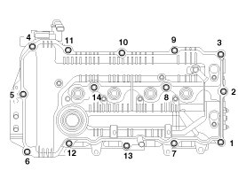
11. Drain engine oil and remove the oil pan.
12. Remove the engine mounting support bracket.
(1) Set the jack to the edge of the lower crankcase.
NOTE:
Put the wooden block between lower crankcase and jack.
CAUTION:
Be careful not to damage the oil screen.
(2) Disconnect the engine ground line (A).
(3) Remove the engine mounting support bracket (B).
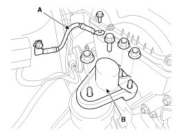
13. Remove the drive belt.
(1) Loosen the alternator mounting bolts (A).
(2) Loosen the tension by turning the tension adjusting bolt (B) counterclockwise.
(3) Remove the drive belt (C).
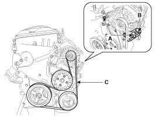
14. Remove the front engine hanger (A).
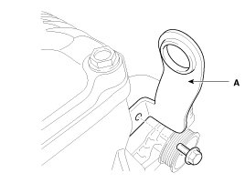
15. Remove the alternator (A).

16. Remove the water pump pulley (A).

17. Set No.1 cylinder to TDC (Top dead center) on compression stroke.
(1) Turn the crankshaft pulley and align its groove with the timing mark of the timing chain cover.

(2) Check that the TDC marks of the intake and exhaust CVVT sprockets are in straight line on the cylinder head surface as shown in the illustration. If not, turn the crankshaft by one revolution (360°) more.

NOTE:
Do not turn the crankshaft pulley counterclockwise.
18. Remove the crankshaft damper pulley (A).

CAUTION:
Do not press the pulley or apply the excessive force to prevent the rubber part from being deformed.
NOTE:
There are two methods to hold the ring gear when removing the crankshaft damper pulley.
- Install the SST (09231-2B100) to hold the ring gear after removing the starter.

- Install the SST (09231-3D100) to hold the ring gear after removing the service cover.
1. Remove the air guard (A).

2. Remove the two transaxle mounting bolts (A) and the service cover (B) on the bottom of the lower crankcase.

3. Adjust the length of the holder (A) so that the grooves of the holder puts into the ring gears (B) at the closest position.
4. Adjust the angle and length of the links (C) so that the two transaxle mounting bolts can be fastened into the original mounted holes.

5. Install the SST using the two transaxle mounting bolts. Tighten the bolts and nuts of the holder and links securely.

19. Remove the timing chain cover (A) by gently prying the gaps between the cylinder head and cylinder block.
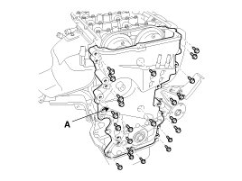
CAUTION:
Be careful not to damage the contact surfaces of cylinder block, cylinder head and timing chain cover.
20. Remove the timing chain tensioner (A).
CAUTION:
- Do not reuse the detached tensioner.
- If need to reuse the tensioner, remove the tensioner, make the piston (A) to protrude maximally, push the piston (A) to the end, and then mount the stopper pin.
At this time, the tensioner fixing pin should be placed in the same way as when the product was first delivered from the factory.
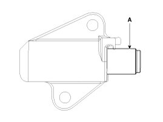
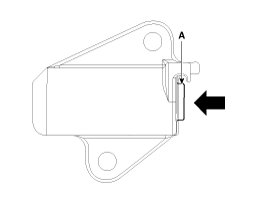
21. Remove the timing chain tensioner arm (A).
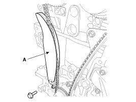
22. Remove the timing chain (A).
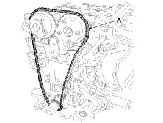
23. Remove the timing chain guide (A).
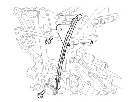
Inspection
Sprockets, Chain Tensioner, Chain Guide, Chain Tensioner Arm
1. Check the CVVT sprocket and crankshaft sprocket for abnormal wear, cracks, or damage. Replace if necessary.
2. Inspect the tensioner arm and chain guide for abnormal wear, cracks, or damage. Replace if necessary.
3. Check that the tensioner piston moves smoothly.
Drive belt, Idler, Pulley
1. Check the idler for excessive oil leakage, abnormal rotation or vibration. Replace if necessary.
2. Check belt for maintenance and abnormal wear of V-ribbed part. Replace if necessary.
3. Check the pulleys for vibration in rotation, oil or dust deposit of V-ribbed part. Replace if necessary.
CAUTION:
- Do not bend, twist or turn the timing belt inside out.
- Do not allow the timing belt to come into contact with oil, water and steam.
Installation
1. The TDC marks of the intake and exhaust CVVT sprockets are slightly turned from the TDC position as shown when the timing chain is removed.
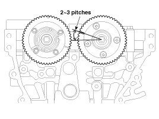
2. Turn the crankshaft clockwise (about 2 - 3 pitches) from the TDC position (the dowel pin (A) of crankshaft is about 3° with the engine vertical line) as rotation of the intake CVVT sprocket from the TDC position.
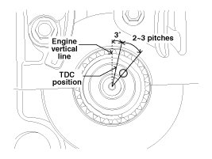
3. Install the timing chain guide (A).
Tightening torque:
18.6 - 22.6 N.m (1.9 - 2.3 kgf.m, 13.7 - 16.6 lb-ft)
4. Install the timing chain tensioner arm (A).
Tightening torque:
18.6 - 22.6 N.m (1.9 - 2.3 kgf.m, 13.7 - 16.6 lb-ft)
5. Install the timing chain.
Crankshaft sprocket (A) -> Timing chain guide (B) -> Intake CVVT sprocket (C) -> Exhaust CVVT sprocket (D)
(1) Install the timing chain with no slack between the crankshaft sprocket and the intake CVVT sprocket.
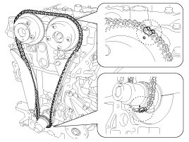
NOTE:
The timing marks of each sprocket should be matched with timing marks (color link) of timing chain when installing the timing chain.
(2) Install the timing chain on the exhaust CVVT sprocket with no slack while turning the CVVT assembly clockwise.
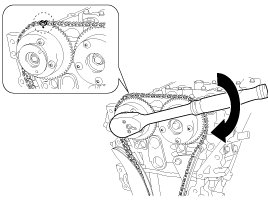
NOTE:
- The timing mark of the exhaust CVVT sprocket should be matched with timing mark (color link) of timing chain when installing the timing chain.
- Press down the timing chain links on the exhaust CVVT sprocket to prevent the sprocket from spinning.
6. Install the timing chain auto tensioner (A) and remove the stopper pin (B).
Tightening torque:
9.8 - 11.8 N.m (1.0 - 1.2 kgf.m, 7.2 - 8.7 lb-ft)
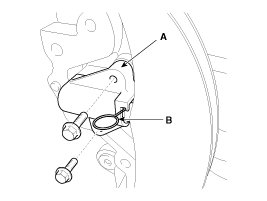
CAUTION:
- When reinstall the tensioner, check the ratchet function of the tensioner after removing the fixing pin by retracting the tensioner arm (A) maximally as shown below.
- When maximally retracted, there should be no interference between the tensioner arm (A) and tensioner housing (B).
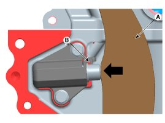
7. After rotating crankshaft 2 revolutions in regular direction (clockwise viewed from front), confirm that the TDC marks on the intake and exhaust CVVT sprockets are aligned with the top surface of cylinder head.
8. Install the timing chain cover.
(1) Using a gasket scraper, remove all the old packing material from the gasket surfaces.
(2) The sealant locations on the chain cover and the counter parts (cam carrier, cylinder head, cylinder block, and lower crankcase) must be free of harmful foreign materials, oil, dust and moisture. Spraying cleaner on the surface and wiping with a clean duster.
(3) Before assembling the timing chain cover, liquid sealant should be applied on the gap between cam carrier, cylinder head and cylinder block.
Bead width:3.0 - 5.0 mm (0.11 - 0.20 in.)
Sealant:Threebond 1217H or equivalent
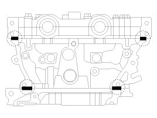
(4) After applying liquid sealant on the timing chain cover, assemble the cover within 5 minutes after sealant was applied. Continuous bead of sealant should be applied to prevent any path from oil leakage.
Bead width
Whole section: 2.5 - 3.5 mm (0.10 - 0.14 in.)
Section A: 4.5 - 5.5 mm (0.18 - 0.22 in.)
Section B: 8.0 - 9.0 mm (0.32 - 0.35 in.)
Sealant:Threebond 1217H or equivalent
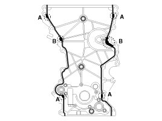
(5) Install the timing chain cover. The dowel pins on the cylinder block and holes on the timing chain cover should be used as a reference in order to assemble the timing chain cover in exact position.
Tightening torque
Bolts (A, B):
18.6 - 23.5 N.m (1.9 - 2.4 kgf.m, 13.7 - 17.4 lb-ft)
Bolt (C):
19.6 - 23.5 N.m (2.0 - 2.4 kgf.m, 14.5 - 17.4 lb-ft)
Bolts (D,E):
39.2 - 49.0 N.m (4.0 - 5.0 kgf.m, 28.9 - 36.2 lb-ft)
Bolt (F):
9.8 - 11.8 N.m (1.0 - 1.2 kgf.m, 7.2 - 8.7 lb-ft)

CAUTION:
Do not reuse the seal bolts (C,F).
CAUTION:
The engine running or pressure test should not be performed within 30 minutes after the timing chain cover was assembled.
9. Replace the front oil seal if necessary.
(1) Apply engine oil on the edge of new oil seal.
CAUTION:
Remove any debris from the lip portion of the oil seal.
(2) Install the front oil seal (A) using SST (09231-2E000, 09231-H1100).
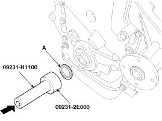
10. Install the crankshaft damper pulley (A).
Tightening torque:
196.1 - 205.9 N.m (20.0 - 21.0 kgf.m, 144.7 - 151.9 lb-ft)
CAUTION:
Do not press the pulley or apply the excessive force to prevent the rubber part from being deformed.
NOTE:
There are two methods to hold the ring gear when installing the crankshaft damper pulley.
- Install the SST (09231-2B100) to hold the ring gear after removing the starter.
- Install the SST (09231-3D100) to hold the ring gear after removing the service cover.
1. Remove the air guard (A).
2. Remove the two transaxle mounting bolts (A) and the service cover (B) on the bottom of the lower crankcase.
3. Adjust the length of the holder (A) so that the grooves of the holder puts into the ring gears (B) at the closest position.
4. Adjust the angle and length of the links (C) so that the two transaxle mounting bolts can be fastened into the original mounted holes.
5. Install the SST using the two transaxle mounting bolts. Tighten the bolts and nuts of the holder and links securely.
11. Install the water pump pulley (A).
Tightening torque:
9.8 - 11.8 N.m (1.0 - 1.2 kgf.m, 7.2 - 8.7 lb-ft)
12. Install the front engine hanger (A).
Tightening torque:
34.3 - 39.2 N.m (3.5 - 4.0 kgf.m, 25.3 - 28.9 lb-ft)
13. Install the drive belt.
(1) Preassemble the alternator (A) temporarily.
(2) Install the drive belt (B).
(3) Adjust the tension by turning the tension adjusting bolt (A) clockwise.
Belt tension
New belt:
637.4 - 735.5 N (65 - 75 kgf, 143.3 - 165.3 lbf)
Used belt:
441.3 - 539.4 N (45 - 55 kgf, 99.2 - 121.3 lbf)
(4) Tighten the alternator mounting bolts with the specified torque.
Tightening torque
M10 bolt:
29.4 - 41.2 N.m (3.0 - 4.2 kgf.m, 21.7 - 30.4 lb-ft)
M8 bolt:
21.6 - 32.4 N.m (2.2 - 3.3 kgf.m, 15.9 - 23.9 lb-ft)
14. Install the engine mounting support bracket.
(1) Install the engine mounting support bracket (B).
Tightening torque
Nut (C):
63.7 - 83.4 N.m (6.5 - 8.5 kgf.m, 47.0 - 61.5 lb-ft)
Bolt (D) and Nuts (E):
49.0 - 63.7 N.m (5.0 - 6.5 kgf.m, 36.2 - 47.0 lb-ft)
(2) Connect the engine ground line (A).

(3) Remove the jack from the lower crankcase.
15. Install the oil pan.
16. Install cylinder head cover.
(1) The hardening sealant located on the cylinder head cover and the gap between the timing chain cover and the cam carrier should be removed before assembling cylinder head cover.
(2) Apply engine oil on the lip portion of the oil seal on the cover and outer surface of the spark plug pipes.
(3) After applying sealant on the gap between the timing chain cover and the cam carrier, it should be assembled within 5 minutes.
Bead width:2.0 - 3.0 mm (0.08 - 0.12 in.)
Sealant:Threebond 1217H or equivalent
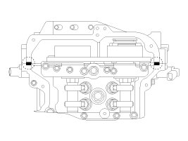
(4) Install the cylinder head cover (A) by tightening the bolts, in several passes, in the sequence as shown.
Tightening torque
1st step: 3.9 - 5.9 N.m (0.4 - 0.6 kgf.m, 2.9 - 4.3 lb-ft)
2nd step: 7.8 - 9.8 N.m (0.8 - 1.0 kgf.m, 5.8 - 7.2 lb-ft)
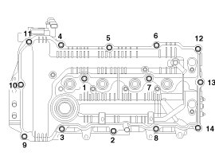
CAUTION:
- Do not reuse cylinder head cover gasket.
- Before installing the cylinder head cover, make sure the cylinder head cover gasket is not separated from the cylinder head cover gasket groove.
- The engine running or pressure test should not be performed within 30 minutes after the cylinder head cover was assembled.
17. Install the oil level gauge (A).
18. Install the ignition coils (A).
Tightening torque :
9.8 - 11.8 N.m (1.0 - 1.2 kgf.m, 7.2 - 8.7 lb-ft)
19. Connect the PCV (Positive crankcase ventilation) hose (A).
20. Connect the breather hose (A).
21. Install the wiring and protectors on the cylinder head cover and then connect the wiring connectors and harness clamps.
(1) The intake OCV (Oil control valve) connector (A)
(2) The exhaust OCV (Oil control valve) connector (A)
(3) The alternator connector (A)
(4) The ignition coil connectors (A)
(5) The intake CMPS (Camshaft position sensor) connector (A)
(6) The exhaust CMPS (Camshaft position sensor) connector (B)
22. Install the engine cover.
23. Install the RH under cover.
24. Install the RH front wheel.
25. Connect the battery negative terminal.
26. Add all the necessary fluids and check for leaks. Connect GDS. Check for codes, note, and clear. Recheck.
NOTE:
- Refill engine with engine oil.
- Clean battery posts and cable terminals and assemble.
- Inspect for fuel leakage.
- After assembling the fuel line, turn on the ignition switch (do not operate the starter) so that the fuel pump runs for approximately two seconds and fuel line pressurizes.
- Repeat this operation two or three times, then check for fuel leakage at any point in the fuel line.